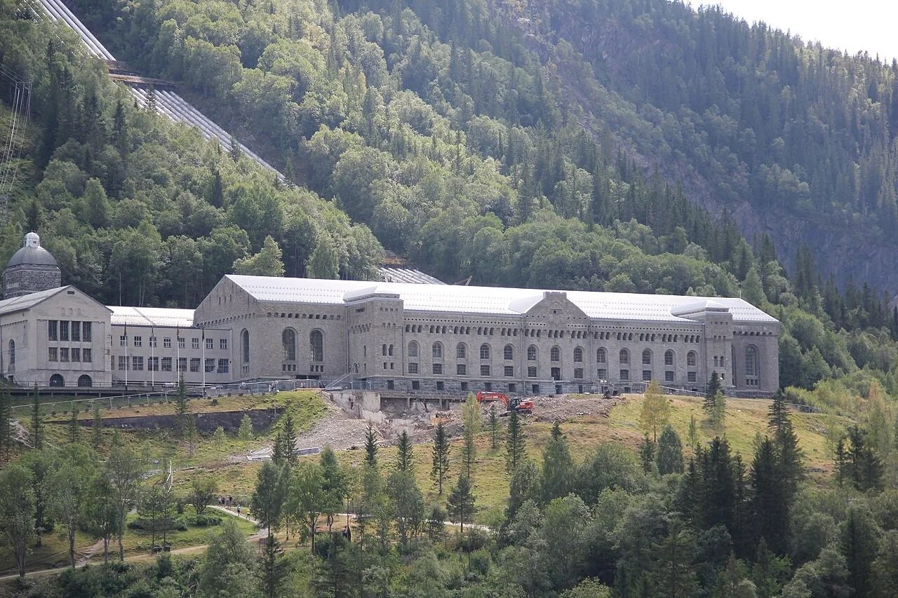
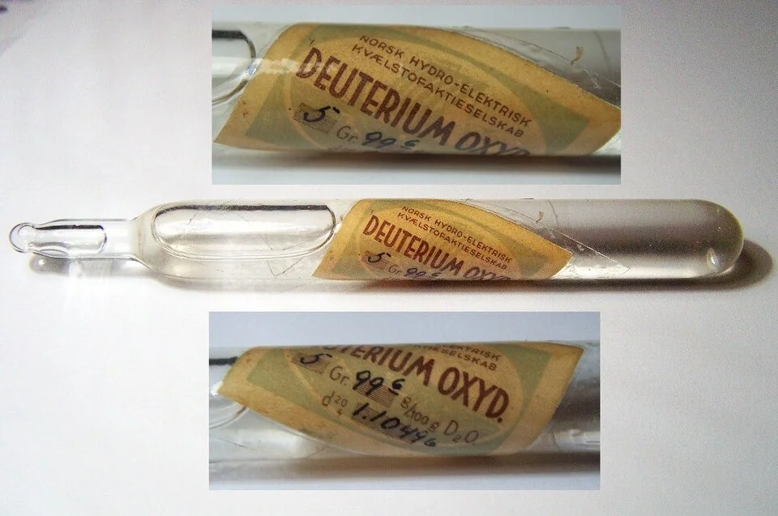
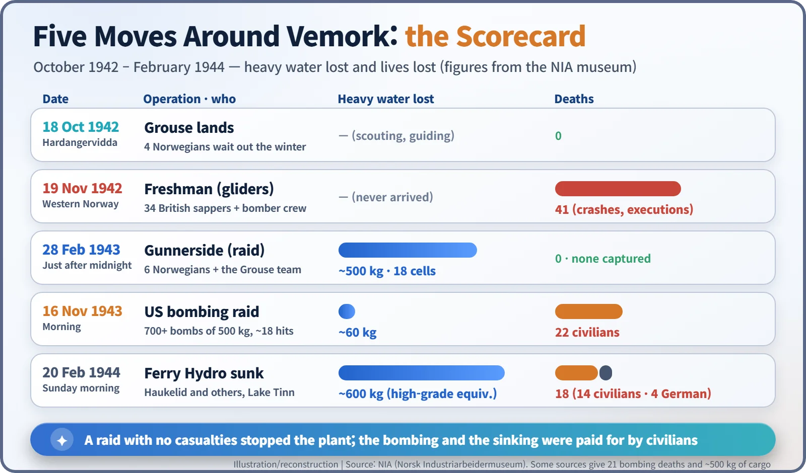
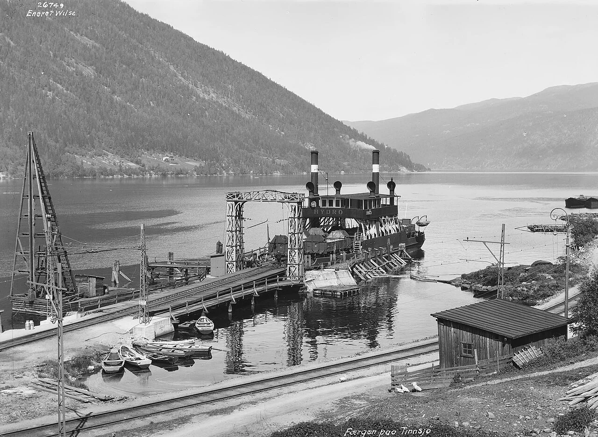
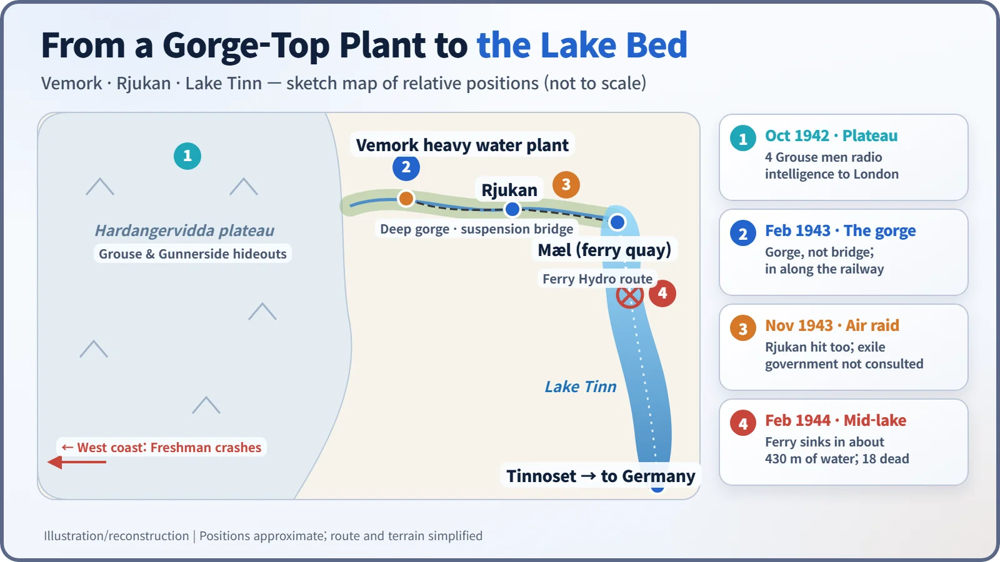

Nuclear History · 094
Saboteurs on Skis — The Attacks on Norway's Vemork Heavy Water Plant (1942–1944)
Six Norwegians on skis wrecked the world's main heavy water plant without a single casualty, but the bombs and the ferry sinking that followed were paid for by civilians.
Between October 1942 and February 1944, the Allies made five moves against the Vemork plant in Norway, then the world's main source of heavy water. A British glider raid ended in disaster, a team of six Norwegians on skis wrecked the production cells without a single casualty, and an American bombing raid and the sinking of a ferry on Lake Tinn cost civilian lives. Historians now doubt the attacks were what kept Germany from a bomb, but they show how the nuclear race spilled far outside the laboratory.
A barrel from the bottom of the lake
At the bottom of Lake Tinn in Telemark, Norway, about 430 metres down, lies an old railway ferry. In the 2000s an expedition brought up a metal barrel from the wreck. It was stencilled with the number 26, and when the water inside was analysed, it really did contain heavy water. That was exactly the cargo the people who sank the ship in February 1944 were after. Getting to that barrel took sixteen months and five dramatic moves around a single factory perched above a gorge. [4]
A plant on a cliff, and why it mattered
The hydroelectric station at Vemork, near the town of Rjukan, opened in 1911. At 108 MW it was the largest power plant in the world, and the company Norsk Hydro used its cheap electricity to split water and make hydrogen for fertiliser. Electrolysis has a useful quirk: ordinary light hydrogen escapes as gas a little more readily than its heavy twin, deuterium, so the leftover water slowly gets richer in deuterium. Repeat the process stage after stage and you end up with heavy water. From December 1934, Vemork became the first place in the world to produce it in quantity. [2]
Why would anyone fight over it? Heavy water slows neutrons down without swallowing many of them, which makes it possible to run a reactor on natural, unenriched uranium. Germany's uranium researchers chose it as their moderator. In spring 1940 France spirited Vemork's entire 185 kg stock out of Norway, but after Germany occupied the country it ordered production stepped up. To the Allies, the plant looked like the windpipe of the German reactor programme. [5]


The first winter: Grouse and Freshman
On 18 October 1942, four Norwegians parachuted onto the Hardangervidda, a vast, bleak mountain plateau. The mission was codenamed Grouse, and its leader, 24-year-old Jens-Anton Poulsson (1918–2010), was a Rjukan local. Their job was to radio intelligence about the plant to London and guide in the main force. [1]
That force was 34 British Royal Engineers. On the evening of 19 November, two Halifax bombers took off from Scotland, each towing a Horsa glider, in Operation Freshman. Thick cloud, icing and a failed navigation aid doomed it. One bomber flew into a mountain, killing all seven crew, and both gliders crashed in western Norway. The survivors were captured and executed under Hitler's "Commando Order", which demanded that Allied commandos not be taken prisoner. Forty-one men died in all. [1] [3]
The Grouse team, renamed Swallow, stayed on the plateau through the winter. According to a story often told, they survived on moss and reindeer meat.
The night of 27 February: across the gorge
On 16 February 1943 a second team of six, Gunnerside, dropped onto the plateau. Their commander, Joachim Rønneberg (1919–2018), was 23. They landed in the wrong place and took about a week to find the Swallow team.
At 8 p.m. on 27 February they set out. The only road into the plant crossed a deep gorge on a suspension bridge, and the bridge was guarded. So instead they climbed down into the snowy bottom of the gorge and scrambled up the far side, then followed the railway line to a gate and waited for the guards to change.
The demolition party slipped into the heavy water concentration room and fixed charges to the electrolysis cells. Just after midnight the charges went off. Eighteen cells were wrecked and about 500 kg of heavy water drained away. Nobody was captured and nobody was killed. Rønneberg and four others then covered roughly 400 km on skis in about 14 days to reach neutral Sweden. [1]

Bombs from the sky, and a Sunday ferry
Within a few months the plant was running again. On the morning of 16 November 1943, American bombers arrived. More than 700 bombs of 500 kg fell on Vemork, but only about 18 hit the plant, and only about 60 kg of heavy water was lost. Twenty-two civilians were killed (some sources say 21). According to the museum, the Norwegian government in exile in London was "neither informed nor consulted" about the raid. [1]
After the bombing, Germany decided to give up production at Vemork and ship the remaining heavy water home. The rail wagons would have to cross Lake Tinn on the railway ferry Hydro. Knut Haukelid (1911–1994) and his companions hid explosives below deck the night before the crossing, with alarm clocks as timers. A contact at the company is said to have delayed the shipment by a day so that it would sail on a Sunday, when fewer passengers would be aboard. [4]
On Sunday 20 February 1944, at some point between 10:30 and 11:00 in the morning (accounts differ), the ferry sank in deep water. Its cargo amounted to roughly 600 kg in high-grade equivalent. Of the 53 people aboard, 18 died: 14 Norwegian civilians and 4 German soldiers. These figures follow the local museum; some sources give the date as 19 February or count only the 14 Norwegians. [1] [4]


So did it stop Hitler's bomb?
The story, retold in films, is often billed as "the raid that stopped the Nazi atomic bomb". Historians are more cautious. The broad consensus is that even if Norway's heavy water had been produced and shipped at the maximum rate, the German programme was still a long way from a bomb. Many of the barrels on the Hydro held only 0.5–1 per cent heavy water, an intermediate stage of the process, and Germany never built a reactor that reached criticality during the war. Rønneberg himself called the 1965 Hollywood film a "hopeless" portrayal. [2] [5]
What remains certain is this: one strand of the scientific race was decided not in a laboratory but on a snowbound plateau, and the price was paid by civilians as well as soldiers.